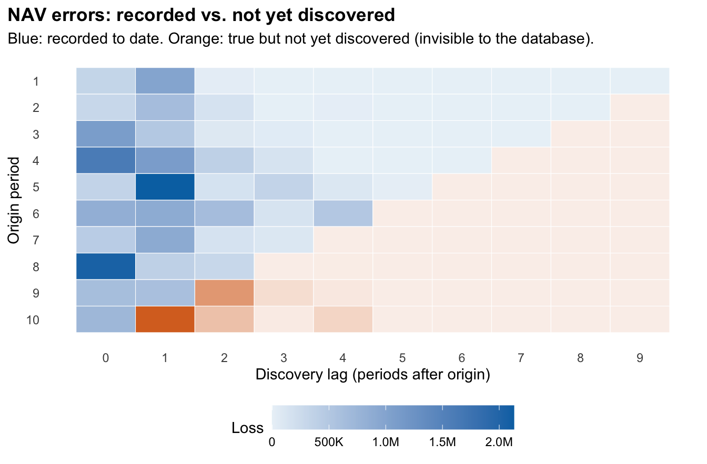
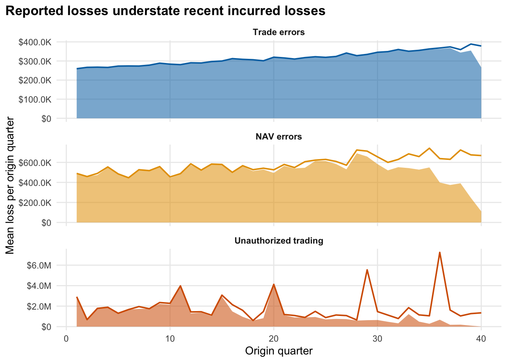

Code
events <- simulate_database(pb, rep = 1)
sq <- build_square(events, "nav_error", "amount", n_o, n_l, period = 4)$square
plot_triangle(sq, "NAV errors: recorded vs. not yet discovered", "Loss")
How much loss has already happened but not yet been recorded?
Everything here comes from a simulation with assumed parameters, not from any firm’s data. It tests how reserving methods behave when the true answer is known. It does not estimate any real firm’s losses.
Operational losses such as trade errors, NAV pricing errors and unauthorized trading are often found long after they happen, and the loss database records them when they are found. So recent periods look cleaner than they are. This is the actuarial incurred-but-not-reported (IBNR) problem, and run-off triangles from the ChainLadder R package are a natural way to estimate what is missing.
Recent reported losses understate the truth, a lot for slow-to-detect events. For the latest four quarters, the share of true incurred loss not yet in the database averages 11% for trade errors, 59% for NAV errors and 87% for unauthorized trading. (pictures below)
Standard methods work only where events are plentiful. Mack and bootstrap chain-ladder are close to unbiased for trade errors (1% relative bias) and acceptable for NAV errors (10% for Mack), whose 95% intervals cover the truth 92% of the time. (Results)
For rare, heavy-tailed unauthorized trading, they mostly cannot run. Mack was usable in 0 of 200 databases. A frequency x severity approach gives a usable estimate (relative bias -4%) but its 95% intervals cover only 63%. About 40% of the true undiscovered loss lies beyond the 10-year window. (Results)
A control improvement fools development methods. If detection gets faster, methods trained on the slower past keep predicting development that no longer occurs. (Results)
Faster detection helps the tail more than the mean. Expected annual loss is $6.0M (12 bps of a $5B firm). The two example controls save $502.30K and $735.12K a year against assumed costs of $400.0K and $700.0K: close to break-even on the mean, with 95% expected shortfall falling from $31.8M to $26.8M and $23.4M. These depend entirely on assumed effects. (Control value)
To use this on real data you would replace each assumed parameter as listed under Limitations; the Reproducibility page shows how to rebuild everything.
A loss event database is organised by when an event was discovered, not when it happened. A trade error booked on Monday may be found by reconciliation the same week. A mispriced NAV may surface a year later. An unauthorized position can run for several years.
So at any evaluation date, the most recent origin periods have had the least time to be discovered. Their recorded losses are low because the events have not yet been found, not necessarily because controls improved. This is the same structure as incurred-but-not-reported (IBNR) claims in insurance reserving, and a run-off triangle is the natural way to see it.
Rows are origin periods (years), columns are discovery lags (years after origin). A cell holds the loss from events that originated in that row and were discovered that many years later. The database can only fill the upper-left; the lower-right (orange) is real loss that exists but has not been discovered.

Averaging 100 simulated databases, the figure below compares what the database reports for each origin quarter with the true incurred loss. The gap opens in the last few years and is widest for the event types with the longest detection lags.
by_origin <- parallel::mclapply(1:100, \(r) {
simulate_database(pb, rep = r) |>
summarise(incurred = sum(severity), reported = sum(severity[origin + lag <= n_o]), .by = c(type, origin))
}, mc.cores = max(1L, parallel::detectCores() - 2L)) |>
bind_rows() |>
summarise(across(c(incurred, reported), mean), .by = c(type, origin)) |>
mutate(type = factor(type_lab[type], levels = type_lab))
ggplot(by_origin, aes(origin)) +
geom_area(aes(y = reported, fill = type), alpha = 0.55) +
geom_line(aes(y = incurred, colour = type), linewidth = 0.7) +
facet_wrap(~type, ncol = 1, scales = "free_y") +
scale_fill_manual(values = type_col, guide = "none") +
scale_colour_manual(values = type_col, guide = "none") +
scale_y_continuous(labels = fmt_usd) +
labs(x = "Origin quarter", y = "Mean loss per origin quarter", title = "Reported losses understate recent incurred losses") +
theme_op()
For the latest four origin quarters in the baseline scenario, the share of true incurred loss that is not yet in the database averages 11% for trade errors, 59% for NAV errors and 87% for unauthorized trading (median 100%). These shares depend on the assumed lag distributions (see Synthetic Data); they illustrate the mechanism, not any real firm.
If the missing amount can be estimated from the shape of past development, a firm can correct its recent loss figures and size a reserve-like buffer. The question we test is which estimation methods are trustworthy for which event type, using synthetic data where the true answer is known.